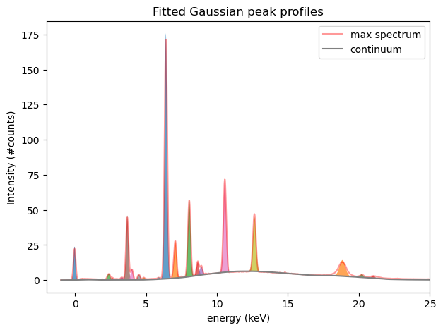
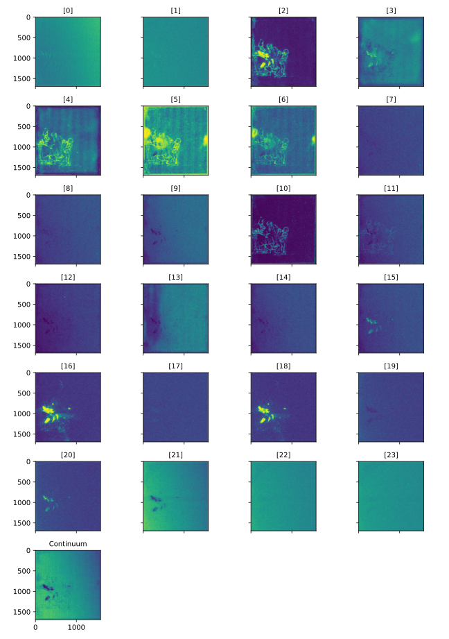
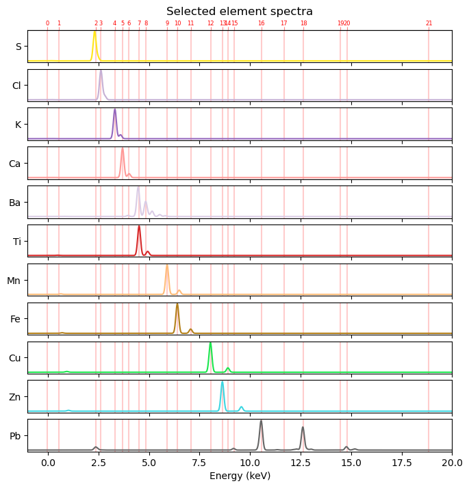
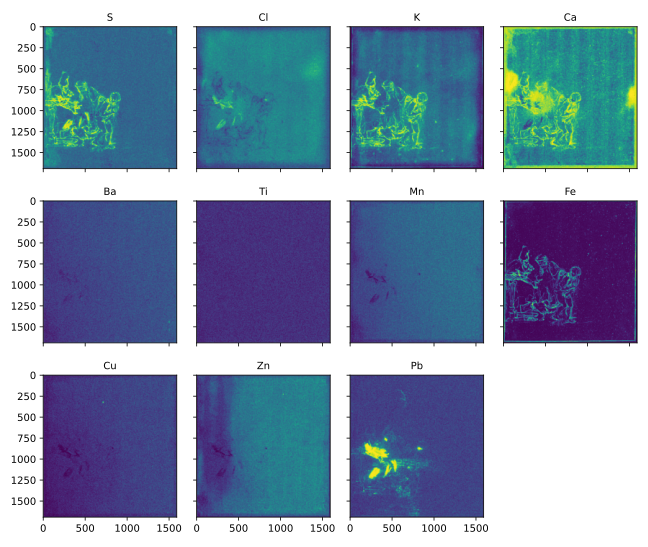

from maxrf4u import fit_spectrum_peaksDistribution maps
Dealing with mixed signals
In the previous section we explored spectra and developed an intuition for solving the peak pattern puzzle that each spectrum presents. Every x-ray fluorescence spectrum in our data cube is a sum of spectral patterns due to the presence of a mixture of chemical elements present at the measurement spot. These spectra are further complicated by 1) the presence of a continuum baseline caused by elastic and inelastic scattering of the paper background, and 2) Poisson photon noise. In other words, spectra contain mixed signals.
In order to arrive at element or material distribution maps, we now need to mathematically unmix the one million spectra from our data cube. Technically speaking we have to factorize our data cube \(X\) into components \(H\) and weights \(W\)(concentrations).
\[ X \approx H \times W \]
Different mathematical techniques have been developed for decomposing spectra into it’s components. Best suited to our needs is a technique called Non-negative Matrix Factorization (NMF). Unlike other algorithms the NMF algorithm ensures that both the computed component spectra and their concentrations can not be negative.
Nonnegative Matrix Factorization twice
The NMF algorithm is implemented in the scikit learn package and is fairly straightforward to use. In our case however we need to take into account that our data cube does not fit into memory all at once. As a workaround I will unmix/simplify the spectral data in two steps, applying the NMF algorithm twice.
Step 1: Gaussian peak fitting
In a first step we need to resolve the problem of overlapping peak regions using NMF. This is done by first fitting Gaussian shaped peak profiles the all hotmax pixel peaks in all hotmax spectra. In order to get an idea what this means let’s first fit the max spectrum using the fit_spectrum_peaks() function and plot the result. The output of the fit function is an array of weights w and the corresponding array of Gaussian peak profiles H.
w, H = fit_spectrum_peaks(y_max, 'RP-T-1898-A-3689.datastack')
fitted_list = w * HCode
fig, ax = plt.subplots(figsize=[7, 5])
y_cont = fitted_list[-1]
for y_fit in fitted_list[:-1]:
ax.fill_between(x_keVs, y_fit + y_cont, y_cont, where=(y_fit>0.001), alpha=0.7)
ax.plot(x_keVs, y_max,c='r', alpha=0.4, label='max spectrum')
ax.plot(x_keVs, y_cont, c='grey', label='continuum', )
ax.set_xlim([-2, 25])
ax.set_xlabel('energy (keV)')
ax.set_ylabel('Intensity (#counts)')
ax.set_title('Fitted Gaussian peak profiles')
ax.legend()
Although some peaks overlap one can see that they are now separated (and filled with different colors) using the NMF algorithm. We can now repeat the same procedure for all spectra in the data cube to produce peak maps. This can be done using the compute_nmf_peakmaps() function. On my laptop this takes 5m 14s.
from maxrf4u import compute_nmf_peakmaps, multi_plotpeak_maps = compute_nmf_peakmaps('RP-T-1898-A-3689.datastack')Please wait a few minutes while preparing your peak maps.
Computing factorization for spectral chunk 30/30...Write peak maps factorization to datastack file [y/n]? y
Saved NMF peak maps data to: RP-T-1898-A-3689.datastackTo get a first idea of the patterns in the peak maps let’s histogram equalize the images for maximum contrast and plot the results.
Code
# no need to compute again
# we can read our saved peak maps from datastack file
ds = DataStack('RP-T-1898-A-3689.datastack')
peak_maps = ds.read('nmf_peakmaps')
peak_maps_histeq = [ske.equalize_hist(pm) for pm in peak_maps]
titles = [f'[{i}]' for i in range(len(peak_maps) - 1)]
titles.append('Continuum')
multi_plot(*peak_maps_histeq, titles=titles, svg=True)
Step 2) From peak maps to element maps
From our peak pattern puzzle in the previous section we found by inspection that the following 11 elements seem to be present in the Susanna drawing: sulfur (S), chlorine (Cl), potassium (K), calcium (Ca), barium (Ba), titanium (Ti), manganese (Mn), iron (Fe), copper (Cu), zinc (Zn) and lead (Pb). In order to compute 11 element maps from 24 peak maps we first need an atlas of spectra for these elements of interest. To create a spectrum for a single element we can use the function get_element_spectrum. For multiple elements we can use the function get_element_spectra().
# found elements
found_elems = ['S', 'Ca', 'K', 'Cl', 'Fe', 'Mn', 'Cu', 'Zn', 'Pb', 'Ti', 'Ba']from maxrf4u import get_element_spectra, colorize
from maxrf4u.peakmaps import _add_hotlines_ticklabelselements, element_spectra = get_element_spectra(found_elems, x_keVs, excitation_energy_keV=25) # sorted by largest peakLet’s plot them see how the theoretical element spectra look like.
Code
n_elements = len(elements)
hotlines = x_keVs[ds.read('hotmax_peak_idxs_flat')]
fig, axs = plt.subplots(nrows=n_elements, sharex=True, figsize=[8, 8])
for i, s in enumerate(element_spectra):
elem = elements[i]
color = colorize(elem)
axs[i].plot(x_keVs, s, color=color)
#_add_hotlines_ticklabels('RP-T-1898-A-3689.datastack', axs[i])
#axs[i].fill_between(x_keVs, nmf_fitted[i], color=color, alpha=0.6)
axs[i].set_yticks([0.5], labels=[elem])
[axs[i].axvline(x, color='r', alpha=0.2, zorder=9-30) for x in hotlines]
axs[0].set_xlim([-1, 20])
axs[0].set_xlabel('Energy (keV)')
_add_hotlines_ticklabels('RP-T-1898-A-3689.datastack', axs[0], vlines=False)
axs[0].set_title('Selected element spectra')
axs[-1].set_xlabel('Energy (keV)')
plt.subplots_adjust(hspace=0.2);
Given all our preparations above, we can now compute our much appreciated element maps, again using the NMF algorithm with the function compute_nmf_element_maps().
from maxrf4u import compute_nmf_element_mapselements, element_maps = compute_nmf_element_maps('RP-T-1898-A-3689.datastack', elements)Preparing peaks to elements transformation matrix...
Computing element maps for ['S', 'Cl', 'K', 'Ca', 'Ba', 'Ti', 'Mn', 'Fe', 'Cu', 'Zn', 'Pb']...
Ready computing!
Write NMF element maps and factorization data to datastack file [y/n]? y
Saved NMF element maps and factorization data to: RP-T-1898-A-3689.datastackCode
from maxrf4u import multi_plot# no need to compute again
ds = DataStack('RP-T-1898-A-3689.datastack')
x_keVs = ds.read('maxrf_energies')
elements = ds.read('nmf_elements')
element_maps = ds.read('nmf_elementmaps')
element_maps_histeq = [ske.equalize_hist(m) for m in element_maps]
multi_plot(*element_maps_histeq, titles=elements, svg=True)
FUNCTIONS
raw_to_element_maps
def raw_to_element_maps(
elements_unsorted, raw_file, rpl_file, output_dir:NoneType=None, chunks:str='10 MiB', auto_write:bool=True,
n_steps:int=7
):
Convert Bruker Macro XRF (.raw) data file raw_filename and (.rpl) shape file rpl_filename
into element maps based on the list elements_unsorted.
Running into memory errors? see: dask.array.core.normalize_chunks for chunk options.
compute_nmf_element_maps
def compute_nmf_element_maps(
datastack_file, elements_unsorted, excitation_energy_keV:int=25, auto_write:bool=False
):
Compute element maps for elements list.
Based on NMF factorization. Requires previously computed peak maps stored in datastack_file. Sorts elements according to strongest (a.k.a. alpha) peak. Ask user to save results.
Returns: elements, element_maps
multi_plot
def multi_plot(
images:VAR_POSITIONAL, hot_pixel:NoneType=None, titles:NoneType=None, roi_list:NoneType=None,
axis_off:bool=False, sharex:bool=True, sharey:bool=True, vmin:NoneType=None, vmax:NoneType=None,
cmap:str='viridis', fontsize:str='medium', zoom_xyc:NoneType=None, zoom_half_wh:list=[100, 100], svg:bool=False
):
Inspect multiple images simultaneously…
Fold along multiple rows if n > 4
compute_nmf_peakmaps
def compute_nmf_peakmaps(
datastack_file, auto_write:bool=False
):
Use nonnegative matrix factorization to compute peak maps spectral data in datastack_file.
If option auto_write is false (default), ask user permission to write result to datastack file.
Returns: peak_maps
fit_spectrum_peaks
def fit_spectrum_peaks(
y, datastack_file
):
Fit Gaussian peak shapes to single spectrum y.
Uses NMF with fixed Gaussian component vectors.
Returns: weighed_components_list
get_gaussians
def get_gaussians(
datastack_file, tail_clip:float=0.05, norm:bool=True
):
Fit Gaussian peak profiles to hotmax peaks in hotmax atlas.
Returns: y_gauss_list
get_continuum
def get_continuum(
datastack_file
):
Compute continuum baseline from sum spectrum.
Uses rolling ball filter to remove peaks from sum spectrum.
Returns: y_continuum